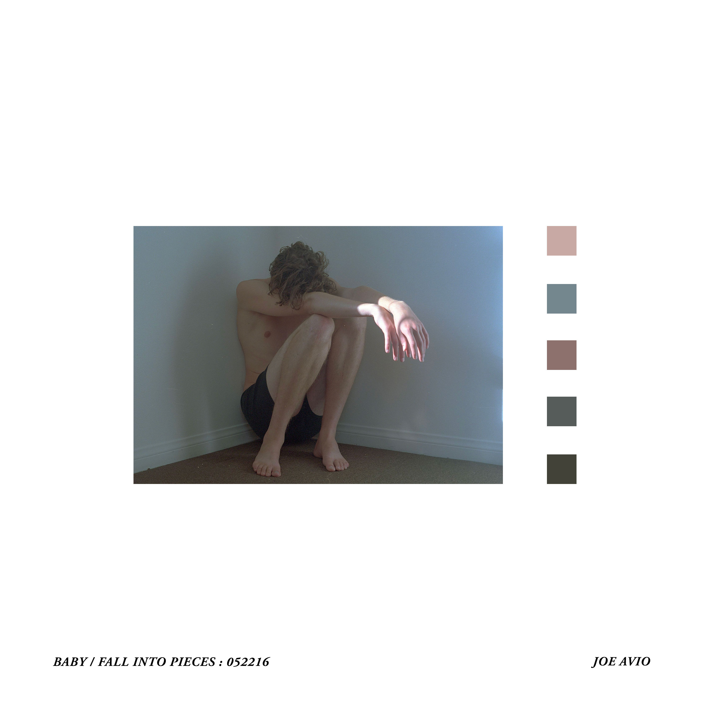
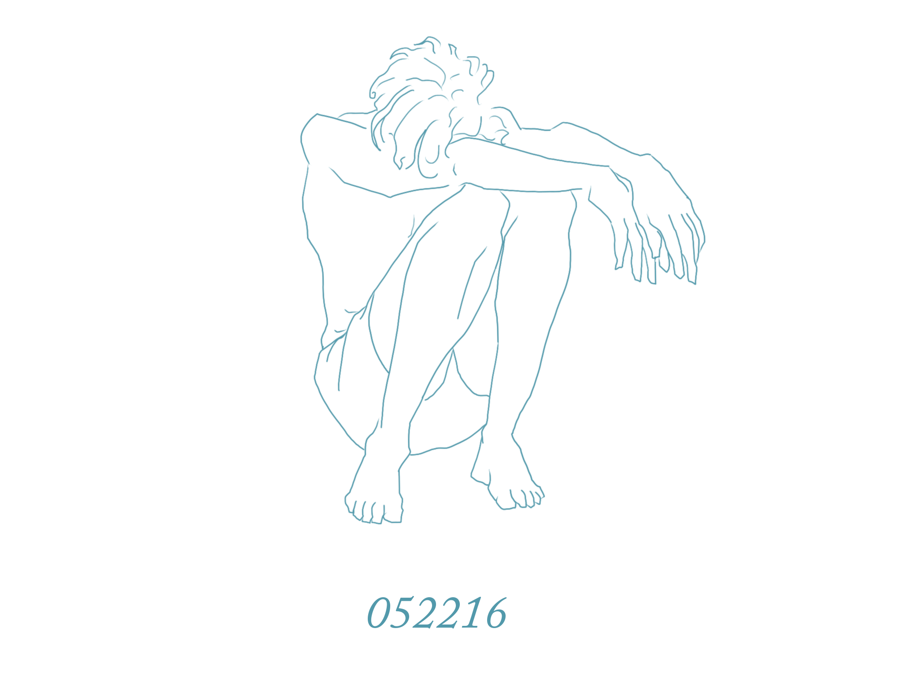

Joe Avio

"052216"
by
Joe Avio
Release Date of November 7, 2018
""'Baby' and 'Fall Into Pieces' were written within several weeks of each other. I had
just moved to Los Angeles, and was trying to reconcile with what I’d left behind
in Canada. Relationships, Loss, Happiness —
the songs document an entire mess of
my experiences that all ended up on paper in a short period of time.

It’s a mistake to define music before listeners have a chance to hear it.
They’re really just love songs — plain and simple.

052216 put the songs in context for me.
Dates heavily inform the way we
write and consume. The date is important to me, and I really believe it will
come across in the music."
- Joe Avio
October 4, 2018

john@bottomfeedermgmt.com
sean@bottomfeedermgmt.com